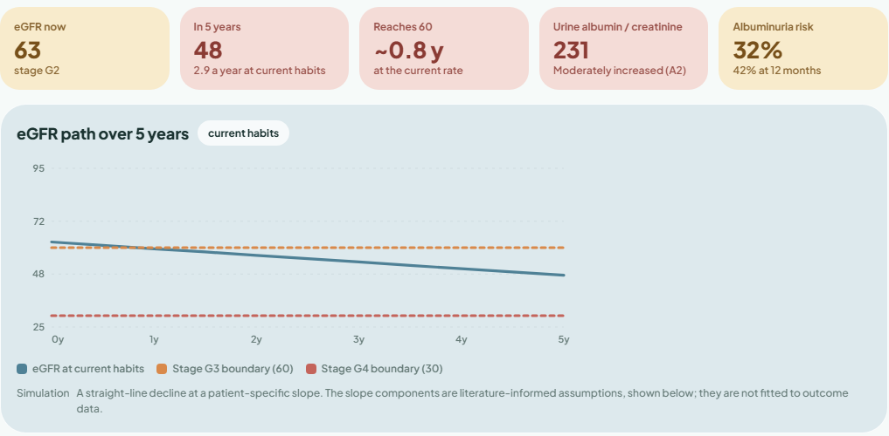
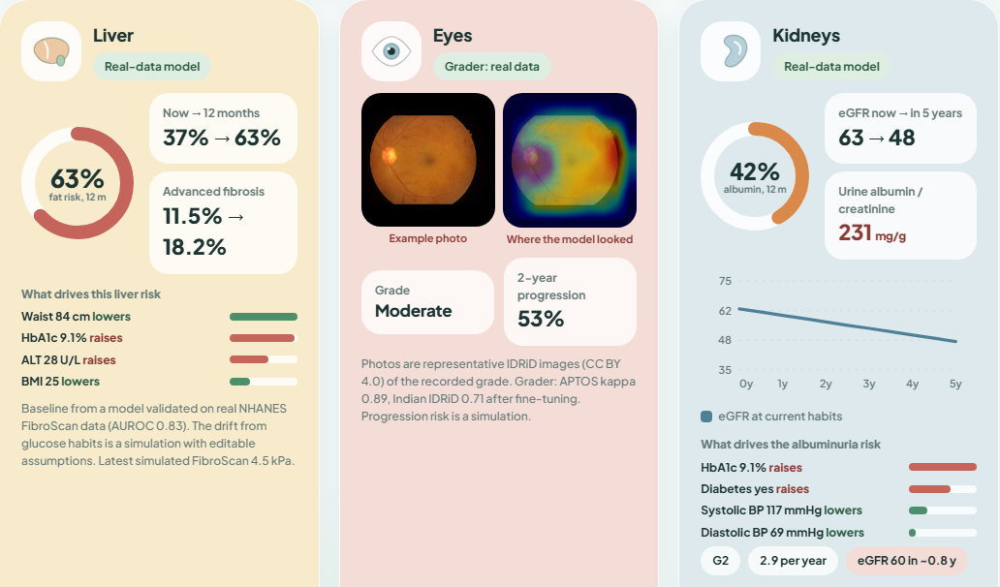
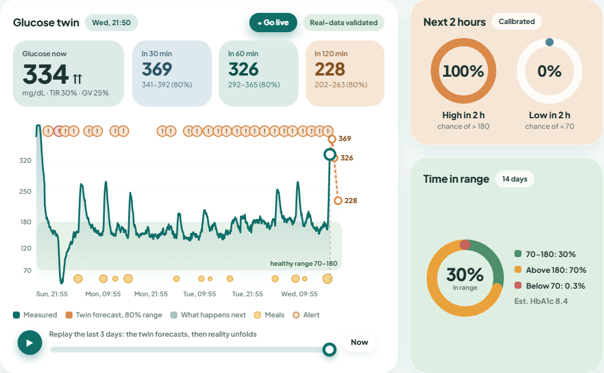
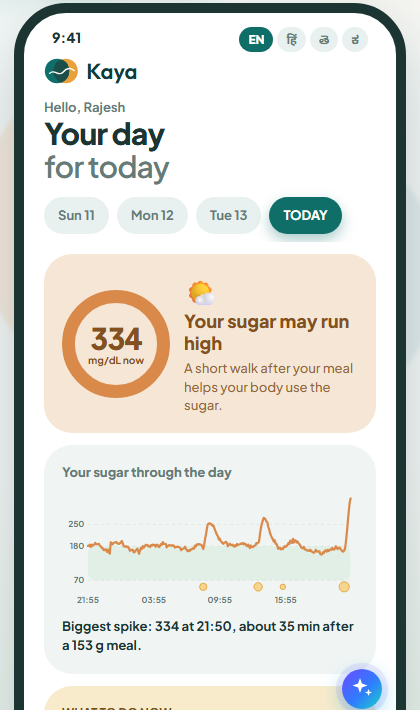
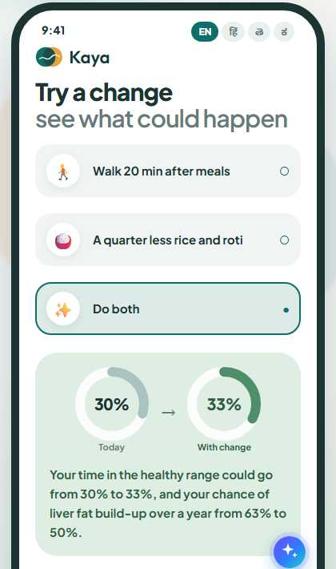
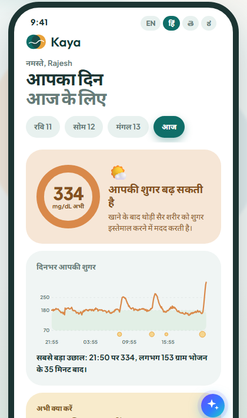

Stop diabetic kidney and eye failure before it starts
Kaya is a multi-organ digital twin that tells Japan’s prevention nurses who to help this week, and why. Built at IIT Hyderabad, designed for Japan first.
佳弥Kaya
佳 (ka) excellent, good · 弥 (ya) to restore, to steadily progress
“Excellent restoration”: a quiet promise that health and blood sugar improve, step by step.
41.6%
of new dialysis in Japan is caused by diabetes, the top cause
JSDT Renal Data Registry 2019
¥5M
a year for one dialysis patient (about ¥1.6 trillion nationally)
HGPI estimate, ¥4–6 million
47%
of patients on diabetes drugs get a yearly eye exam
J Diabetes Investig 2023, national claims data
15% vs 59%
yearly urine albumin test, Japan vs Europe
BMJ Open Diabetes Res Care
~1%
of eligible patients got prevention-program guidance in one city
Kyoto city, Frontiers in Endocrinology 2023
101M
Indians have diabetes, about 1 in 9 adults; 136M more have prediabetes
Analyst estimates differ by about 2×; we will size our own market with pilot data.
3Solution
One twin per patient. One ranked list for the nurse every week.
Also: plain-language patient phone view (English, Hindi, Telugu, Kannada; 日本語 planned), FHIR R4 API, one-click PDF summary. Decision support, not a diagnostic device.
OUR USP
The only tool we found that links glucose → kidney and eye risk → whether the screening actually happened in one weekly worklist, with the reason behind every flag and a what-if a nurse can show the patient.
Worklist: “what changed since last visit”Night-time low, urine albumin up 28%, retinopathy one grade worse, missed medicines: the nurse sees why this patient is listed.

Kidney: 5-year eGFR path (Japan lead)Risk now and in 5 years, what drives the slope, labelled as a simulation.

Liver, eyes, kidneys side by sideRetina photo with a heatmap of where the model looked, so an ophthalmologist can check it.

Glucose twin with forecast band30, 60 and 120 minutes ahead with an 80% uncertainty range; every alert says why it fired.
4Business model
Annual subscription per enrolled patient, paid by whoever saves from prevention.
Flat software fee only. No commission per test or referral.
Price to be set with pilot partners and advisors; none quoted yet.
5Competition
Both markets pay for digital diabetes tools. Nobody we found covers organ complications and the screening loop.
offered partial not found in our search of public information (to be verified). Also in Japan: Abbott FreeStyle Libre (a data source, not a rival) and EHR vendors (integration partners).
Kidney + eye together, with the reasonClosed referral loopSignal between checkupsHonest uncertainty on every score
→Japan pilot plan: prove it on past data first
A free, data-only look-back with one insurer proves value without touching a single patient.
1 · Prepare
Japanese UI and patient text with clinician review. Advisors recruited. Regulatory opinion. Pick the pilot city.
Gate: advisors + data agreement
2 · Look-back test
3–5 years of anonymised checkup and claims data. Would Kaya have flagged people whose eGFR later fell, earlier than the insurer’s current rule?
Gate: beats the current rule
3 · Live pilot
Nurses use the weekly worklist and referral tracker. Compare reach, test completion and eGFR trend with a matched group.
Gate: reach and tests rise
4 · Scale
Paid annual contract, published results, neighbouring insurers, then Korea and Taiwan.
Gate: renewals
Measures:program reacheye and urine test completioneGFR decline vs comparison groupnurse minutes per patientmodelled dialysis avoided (a model)
Why Kaya fits the criteria
Global perspectiveBuilt in India, adapted for Japan, the most advanced ageing society. Travels on to Korea, Taiwan, China and back to India.
Technology-drivenMulti-organ twin, calibrated uncertainty, explanations for every alert, FHIR API, no GPU needed. 149 automated tests.
Betterment of societyFewer people on dialysis or losing sight; more patients reached; less load on nurses and doctors.
For the patient: one next step, in plain language

Todayglucose outlook

Try a changewalk after meals

4 languages+ voice; 日本語 next
Validated on real open data, honestly
72% of lows caught
Liver AUROC 0.83
Eye AUROC 0.92
Kidney ≈ simple baselineFIB-4 liver score: 0.63Not yet tested in Japan
What we ask EMC
Introductions to one or two Japanese municipalities or insurers for a free, data-only pilot
A Japanese clinical advisor in diabetes or nephrology
A regulatory and privacy advisor (device rules, APPI)
A local partner for procurement and language
In return We share the look-back results openly and build a tested India–Japan model for ageing societies.
What we do not claim
Decision support, not diagnosis. It does not prescribe or replace an ophthalmologist.
Not yet tested on Japanese patients. The pilot starts with a look-back to find out.
Organ links and what-if effects are simulations, always labelled.
Heart watch is research-only; eye grading waits for regulatory review.
Health data stays in Japan, inside the insurer’s environment.